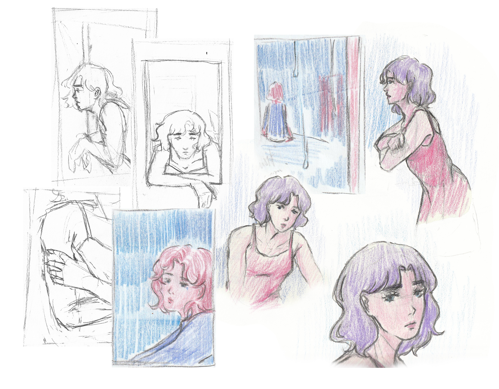

Trailer de mon mémoire de 3e année de DN MADe sur le thème de l’inachevé. Ce trailer expose les notions clés de ma recherche et les mets en images.
(lien vers mon mémoire)Motion sur AfterEffects
Réalisation d’un visualizer sous forme de loop animé image par image. L’animation a été imaginée pour la chanson Candy de Naoko Gushima afin d’en retranscrire l’univers. Réalisation de recherches graphiques, storyboard et style frames en amont de la phase d’animation.
Trailer
Visualizer
